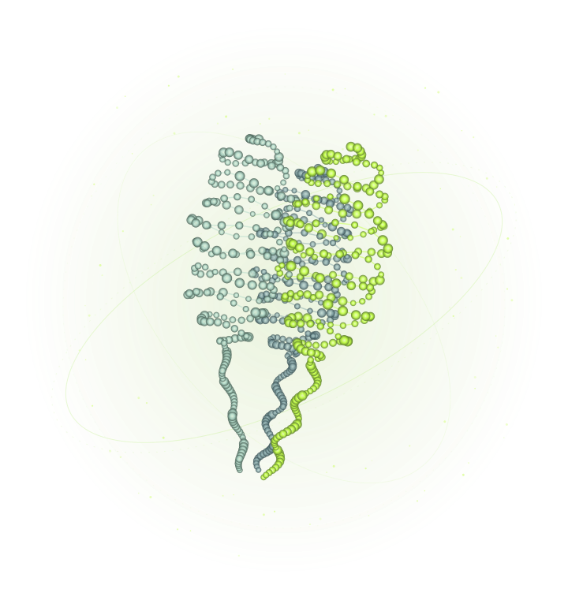

INFLUMATICS RESEARCH
H3N2
ATLAS.
서열로 읽는 인플루엔자의 항원 거리
두 바이러스를 항체가 얼마나 다르게 인식할까요?
경북의대 학생 연구팀이 공개 자료를 바탕으로
다섯 모델의 추정 오차를 비교했습니다.

CONCEPTUAL VISUALIZATION
DRAG TO ROTATE
단순한 기준 모델을
넘어설 수 있을까?
단백질 언어모델이 인플루엔자 A/H3N2의 항원 거리를 얼마나 잘 추정하는지 알아보기 위해, 2019년부터 2022년까지 해마다 그 전까지의 자료로 학습한 모델을 평가했습니다.
연도별 모델 비교 보기MOLECULAR GALLERY
단백질과 핵산의
입체 모형
아래로 내리면 모형과 시점이 바뀝니다.
우리가 살펴보는
단백질, HA.
HA1은 HA 단백질의 일부입니다. Influmatics에서는 이 부분의 아미노산 서열을 비교합니다.
HA에서 영감을 받은 개념 모형입니다. 실제 구조 좌표는 사용하지 않았습니다.
설명용 모형 · 인플루엔자의 유전체는 RNA입니다.
다섯 모델을 비교한
연구 설계
어떤 자료를 학습에 썼는지에 따라
같은 오차도 다르게 해석해야 합니다.
저장된 개발 자료에는 고유 바이러스 928개, 평가 자료에는 545개가 있었습니다.
항원 지도
우리 연구에서 분석한 H3N2 표본 62개의 항원 지도입니다.
연도를 고르면 그해의 표본이 전체 분포의 어디에 놓이는지 볼 수 있습니다.